Confirmed session: 3:30–6:00 PM. All eight topics retain their planned durations. The agenda is continuous, with a 15-minute break and 40-minute peer review.
The PowerPoint has been updated. The lab and demo choices remain preparation proposals. Notes separate read-aloud narration from timing, editing tasks, and sources. Existing code was inspected, not run or repaired.
Open the Week 7 Unreal Python preparation guide for the complete Oster lesson map, companion automation course, setup run sheet, snippet corrections, and wider pipeline and UX context. Browse 24 readable source notes and their historical screenshots.
The Week 7 Python demo package now supplies the working selection and controlled-edit example. Its saved validation records document prior testing; the original quick-scan statements below about no sample project describe the earlier preparation stage. Batch import remains a separate rehearsal item.
| Time (PM) | Topic |
|---|---|
| 3:30–3:35 | Introduction |
| 3:35–3:50 | Python in Unreal: setup |
| 3:50–4:10 | Python in Unreal: introduction |
| 4:10–4:40 | Python tool examples |
| 4:40–4:55 | Lab: provisional |
| 4:55–5:10 | Break |
| 5:10–5:20 | UI/UX overview |
| 5:20–6:00 | Peer midterm check-in |
Your Week 3 wiki already gives a strong bridge: pure Python calculates, the host application supplies scene data, and the UI communicates scope and evidence. Week 7 asks students to revise from a specific observation rather than describe implementation effort.
Open with one capstone pain point, then carry the Check / Apply / verify pattern into Unreal. Do not repeat the Python syntax introduction.
This is existing course guidance. The Week 7 wiki is explicitly a planned outline, not an approved assessment brief.
Your “00 Setup” note collects setup, autocomplete, and debugger links plus screenshot references. Oster L1 has a Content/Python script and a Hello World run. A2 records a UE 5.7 interpreter path and a debugpy attachment configuration.
Use plugin enablement, restart, Output Log Python mode, one log message, then a script file. Move autocomplete and debugpy to optional preparation. Epic’s 5.7 documentation confirms the embedded interpreter, per-project plugin setup, and editor-only scope.
The museum .uproject records 5.7 but does not explicitly list the Python or Editor Scripting Utilities plugins. That does not prove they are disabled. Check the effective editor state. A2 contains machine-specific paths and should not become student setup instructions unchanged. Embedded screenshots are now resolved in the linked note readers where available; they remain historical study captures.
You have a coherent lesson sequence: L2 lists asset paths and reloads a module; L3 contrasts Content Browser selection with level Actors; L4 explores class filtering; L5 reads and sets editor properties. L7 connects Static Mesh Actors and their Components. L8 explores materials and API discovery.
Teach the data model before broad automation: asset versus Actor versus Component, a small selection, one property, then a readable report. Reserve the end of the section for project applications and student questions.
These are study notes with partial and erroneous snippets, not a ready classroom package. Keep menu registration, remote control, inheritance detail, and full-project scans out of the initial 20 minutes.
The closest collected examples are selection/property inspection, A4 batch FBX import, and A5 asset validation. Your project also contains an Actor inventory exporter, a light mobility batch edit, automated gallery captures, and a larger student-readiness check.
Recommended 10-minute sequence per example: inspect/report; batch import; validation with a brief specialization preview. Reuse the same small fixture where practical. Show the manual need, the result, and a failure or missing-input case. Keep specialist details optional.
The notes and project scripts were read or skimmed, not executed. A4 saves and replaces existing imports. Existing scripts have specific map paths and side effects; see the demo inventory below. No newly repaired scripts or sample project are included.
Your selection and property notes support a short investigation. The validation wiki already frames known passes, failures, and insufficient information. Week 3 has a predict/run/explain activity and a partner observation pattern.
Preferred candidate: 2 minutes to predict a selection report, 8 to inspect a small fixture, 3 to explain results to a partner, 2 to share. Alternative A: compare a known pass, failure, and incomplete case using a prepared report. Alternative B: write a test scenario and expected result for the midterm tool.
All three are proposed activities. Choose after checking machine readiness. A 15-minute block should not require building an entire tool or a new UI. If setup runs long, a prepared report walkthrough keeps the learning goal intact.
The screenshot allocates a 15-minute break. No instructional content is needed.
Retain 15 minutes and display the 5:10 return time.
Shifted earlier because the user confirmed a 6:00 finish. No extra break policy is inferred.
Your FIEA UI/UX lecture covers discovery, users, requirements, workflow, prototypes, and testing. The Artist-Facing Tool UX Checklist condenses this into user/task/pain point, prototype, real-user testing, and maintenance. The existing Week 3 reading synthesis translates Krug into clear hierarchy and task observation, and Norman into signifiers, feedback, constraints, and recovery.
Use 4 minutes for user/task and UI versus UX, 3 for labels/scope/feedback/recovery, and 3 for concrete feedback plus questions. Reuse the Week 3 Check / Apply example. Keep stakeholder strategy and ROI as optional reading, outside this ten-minute overview.
Book page routes below come from the existing synthesis, not a fresh full-book read. The FIEA lecture is historical study material; absolutes such as never allowing text entry are not universal UI rules.
Week 7 already emphasizes reproducible feedback, a useful improvement, and evidence that the revision helped. The Krug synthesis proposes watching users attempt a task and recording hesitation, wrong actions, and misunderstood labels. Week 3 already uses operator/observer pairs.
3 minutes setup; three 10-minute rounds; two 1-minute rotations; 5 minutes reflection. Rounds begin at 5:23, 5:34, and 5:45. Each round gives each tester 4 minutes and both reviewers 2 minutes to finish notes.
Use the same fields for paper, a future online form, and instructor feedback: identity, task, expected/actual result, help needed, criterion evidence, strength, issue, priority, and retest. The deck contains the outline; a finished feedback handout or hosted form has not been created. Preserve existing assignment policies.
A4 Batch Import FBX Meshes in Unreal with Python.md — Full snippet inspected
Behavior: Reads local FBXs; imports, replaces and saves assets.
Preparation: Replace hard-coded paths; use a separate fixture destination; verify importer behavior and the intended replacement policy.
AuditWesternMap.py — Script inspected
Behavior: Loads a named map; reads Actors, meshes and materials; writes JSON under Saved.
Preparation: Good evidence/report example. Loading a map changes editor context. Adapt the map and limit the sample before class.
FixLightMobility.py — Script inspected
Behavior: Loads the gallery, changes light mobility, saves the map, writes a report.
Preparation: A batch edit example specific to this project configuration. Use a duplicate map and a prepared before/after. The script’s lighting rationale is not a universal optimization rule.
PreviewGalleryExhibits.py — Script inspected
Behavior: Loads a map, spawns cameras, schedules screenshots and writes reports; does not save the map.
Preparation: Useful workflow showcase. It still changes the live scene and needs project-specific framing, timing, and cleanup.
CheckStudentReadiness.py — Opening and initial checks skimmed
Behavior: Validates project dependencies, level setup and specimen conditions.
Preparation: Use as an advanced validation example; not a new midterm rubric or evidence of current project readiness.
materials_textures.py — Header and helpers skimmed
Behavior: Creates/duplicates/saves assets under a scoped SandboxGrid root.
Preparation: Optional specialization preview. Requires source assets and preparation; not a 15-minute beginner lab.
These findings come from reading the note text, not executing it. Preserve the source notes and create corrected teaching copies later.
The selected-asset loop prints the whole list each time instead of the current selectedAsset. Actor examples instantiate EditorActorSubsystem directly; verify and use the engine’s subsystem access pattern for the classroom version.
getAssetClass() uses classType without declaring it as a parameter or local value. L5 later calls it with an argument. Confirm the current AssetData class API as well.
The reduction expression has an extra closing parenthesis and premature integer conversion. LODData may remain undefined when the index lookup fails. Treat triangle-count analysis as later material, not a ready demo.
The note contains appen instead of append and aggregateTriCounts - [] instead of assignment. One aggregate expression multiplies the asset-name field rather than the count. It also assumes every component has a valid mesh.
Square textures, power-of-two dimensions, compression, and polygon count are candidate checks only when tied to declared project requirements. They are not universal correctness rules.
These are PDF page numbers recorded in your existing Week 3 synthesis; original books were not re-read in this quick pass.
The source books remain in the instructor library. This compilation paraphrases teaching ideas and does not redistribute book pages.
Old numbers refer to the 22-slide 150-minute draft. New numbers refer to the updated deck. New slides 3–4 supply the setup section that the old outline lacked. Styling stays with the quickly generated deck; the screenshot supplies agenda content, not an inferred visual redesign request.
Field-level edit: Keep Week 7 identity and restrained styling; replace subtitle with the revised session focus.
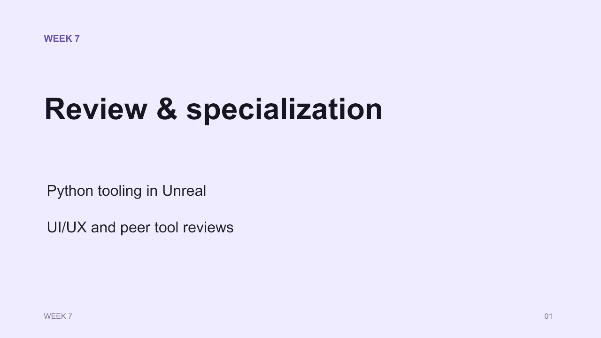
Week 7
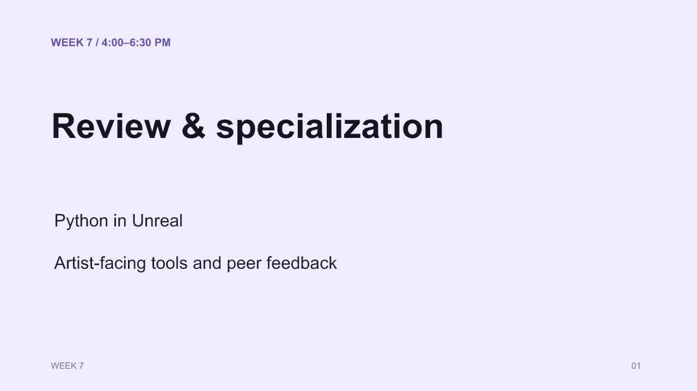
Week 7 / 3:30–6:00 PM
Layout: Editable title and short text rows; slide 2 uses a native table. Existing images above show the actual slides. Additional software captures remain future preparation.
Teaching rationale: Keep Week 7 identity and restrained styling; replace subtitle with the revised session focus. This ties the content to the requested block and avoids extending the confirmed session.
Today we will bring familiar Python ideas into Unreal, then test how clearly our own tools communicate with another person. Which repeated task in your project would you most like to remove?
3:30–3:32. Use one or two responses to connect the session to current projects.
Field-level edit: Replace the entire agenda block with the editable time/topic table.
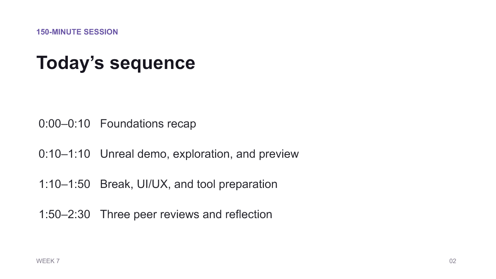
150-minute session
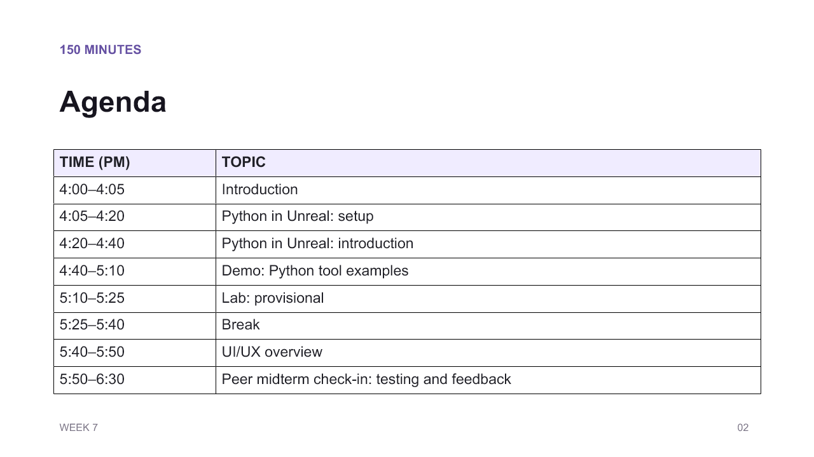
150 minutes
Editable table containing the eight agenda rows shown above.
Layout: Editable title and short text rows; slide 2 uses a native table. Existing images above show the actual slides. Additional software captures remain future preparation.
Teaching rationale: Replace the entire agenda block with the editable time/topic table. This ties the content to the requested block and avoids extending the confirmed session.
We will set up Python, explore the Unreal data model, and look at tool examples before a short lab. After the break, we will use a UI/UX review to prepare for three rounds of peer testing.
3:32–3:35. Timing follows the user’s request to fit the screenshot agenda into 3:30–6:00. Retain all named sections. Shorten the provisional lab from 25 to 15 minutes and remove the unassigned gap.
Field-level edit: Keep the foundation bridge; move it into the Unreal introduction.
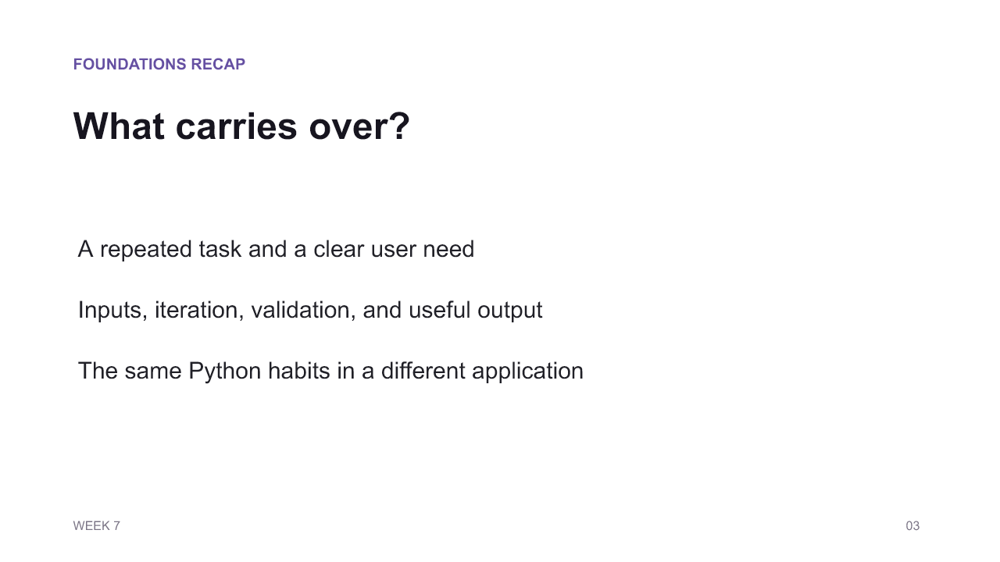
Foundations recap
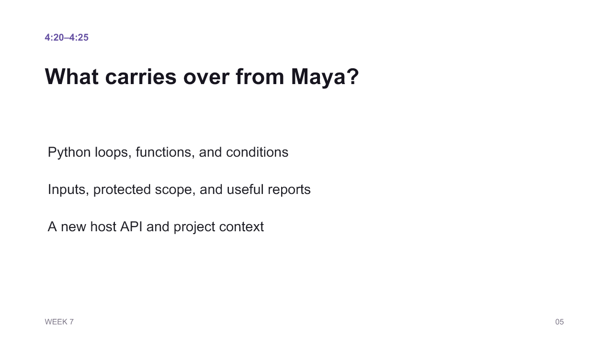
3:50–3:55
Layout: Editable title and short text rows; slide 2 uses a native table. Existing images above show the actual slides. Additional software captures remain future preparation.
Teaching rationale: Keep the foundation bridge; move it into the Unreal introduction. This ties the content to the requested block and avoids extending the confirmed session.
Our Python habits carry over. The application supplies different objects and commands. In Maya we separated checking, applying, and verifying. Where would those steps belong in an Unreal tool?
Use the Week 3 Check / Apply / verify contract as the bridge. Avoid replaying a syntax lecture.
Field-level edit: Keep editor-only scope; add a student-question pause.
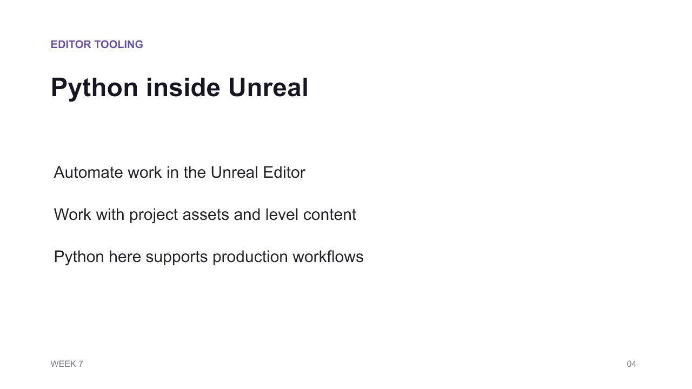
Editor tooling
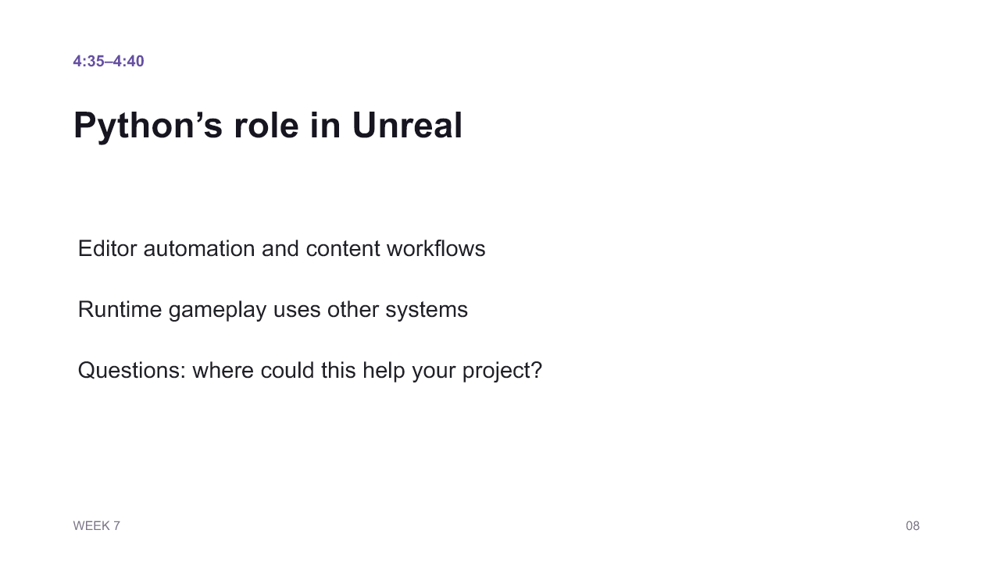
4:05–4:10
Layout: Editable title and short text rows; slide 2 uses a native table. Existing images above show the actual slides. Additional software captures remain future preparation.
Teaching rationale: Keep editor-only scope; add a student-question pause. This ties the content to the requested block and avoids extending the confirmed session.
Python can help prepare and inspect project content. The built-in editor Python environment does not run gameplay in a packaged game. What questions remain about that boundary?
Reserve 2 minutes for student questions. Keep remote control, debugger setup, and menu registration as named optional references in the preparation review.
Field-level edit: Replace generic opportunity prompts with the collected inspection, import, and validation examples.
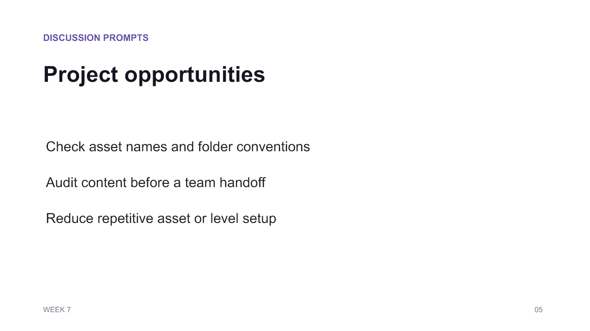
Discussion prompts
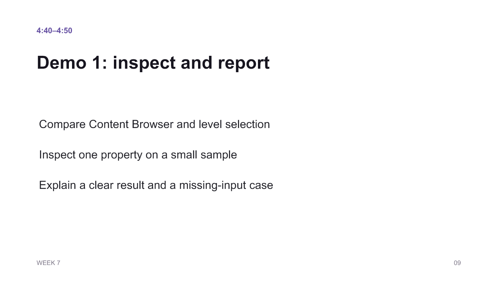
4:10–4:20
Layout: Editable title and short text rows; slide 2 uses a native table. Existing images above show the actual slides. Additional software captures remain future preparation.
Teaching rationale: Replace generic opportunity prompts with the collected inspection, import, and validation examples. This ties the content to the requested block and avoids extending the confirmed session.
Before I run the check, predict which objects it will examine. After it runs, can you explain what the result establishes and what it does not?
Proposed first demo: adapt Oster L3–L5 into a selection report. AuditWesternMap.py is an existing larger reference: it loads a specific map and writes JSON. Do not present it as a selection-only script or a tested classroom fixture.
Field-level edit: Split host-transfer concepts from Assets / Actors / Components.
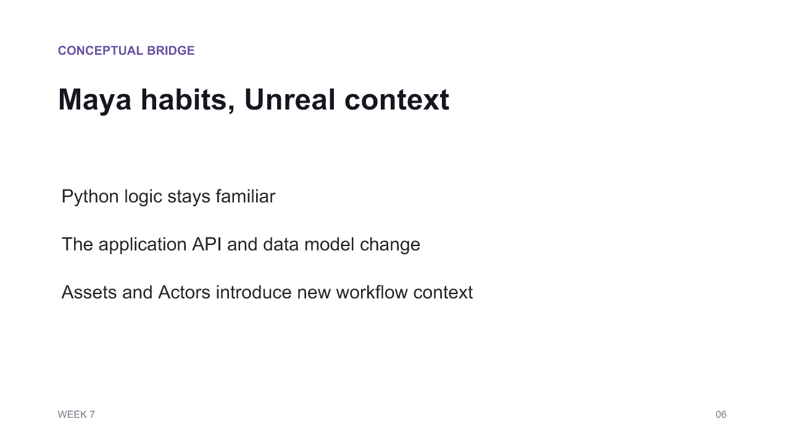
Conceptual bridge
3:50–3:55
Layout: Editable title and short text rows; slide 2 uses a native table. Existing images above show the actual slides. Additional software captures remain future preparation.
Teaching rationale: Split host-transfer concepts from Assets / Actors / Components. This ties the content to the requested block and avoids extending the confirmed session.
Our Python habits carry over. The application supplies different objects and commands. In Maya we separated checking, applying, and verifying. Where would those steps belong in an Unreal tool?
Use the Week 3 Check / Apply / verify contract as the bridge. Avoid replaying a syntax lecture.
Field-level edit: Replace the single proposed checker demo with three short examples grounded in existing notes.
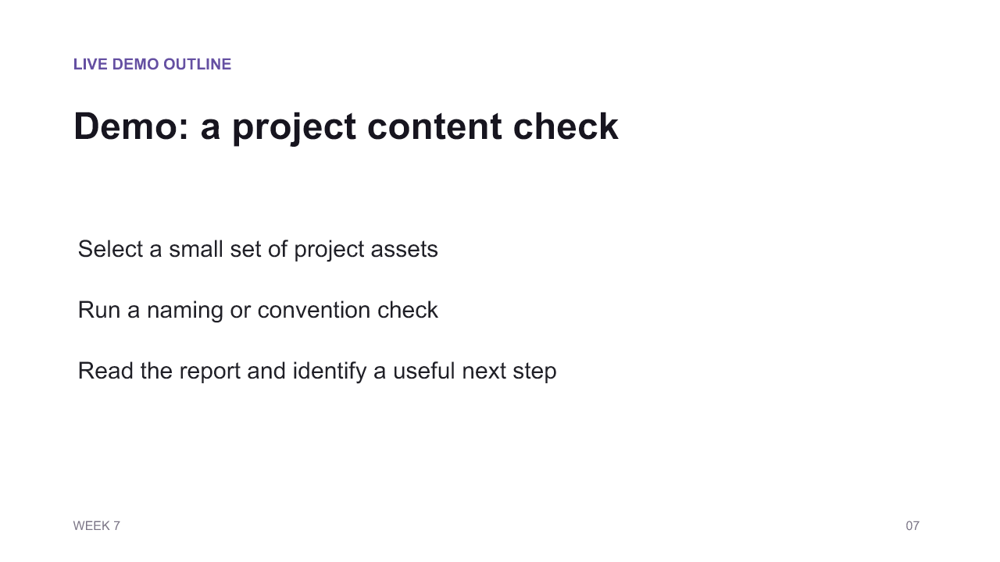
Live demo outline
4:10–4:20
Layout: Editable title and short text rows; slide 2 uses a native table. Existing images above show the actual slides. Additional software captures remain future preparation.
Teaching rationale: Replace the single proposed checker demo with three short examples grounded in existing notes. This ties the content to the requested block and avoids extending the confirmed session.
Before I run the check, predict which objects it will examine. After it runs, can you explain what the result establishes and what it does not?
Proposed first demo: adapt Oster L3–L5 into a selection report. AuditWesternMap.py is an existing larger reference: it loads a specific map and writes JSON. Do not present it as a selection-only script or a tested classroom fixture.
Field-level edit: Merge prediction and debrief questions into each demo; remove the standalone slide.
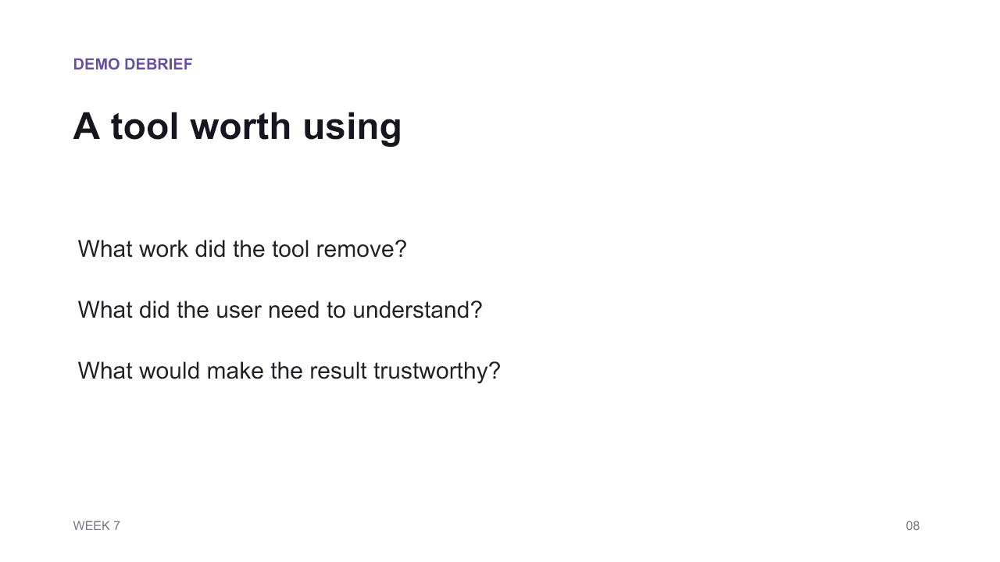
Demo debrief
4:10–4:20
Layout: Editable title and short text rows; slide 2 uses a native table. Existing images above show the actual slides. Additional software captures remain future preparation.
Teaching rationale: Merge prediction and debrief questions into each demo; remove the standalone slide. This ties the content to the requested block and avoids extending the confirmed session.
Before I run the check, predict which objects it will examine. After it runs, can you explain what the result establishes and what it does not?
Proposed first demo: adapt Oster L3–L5 into a selection report. AuditWesternMap.py is an existing larger reference: it loads a specific map and writes JSON. Do not present it as a selection-only script or a tested classroom fixture.
Field-level edit: Replace 20-minute guided exploration with a 15-minute provisional lab.
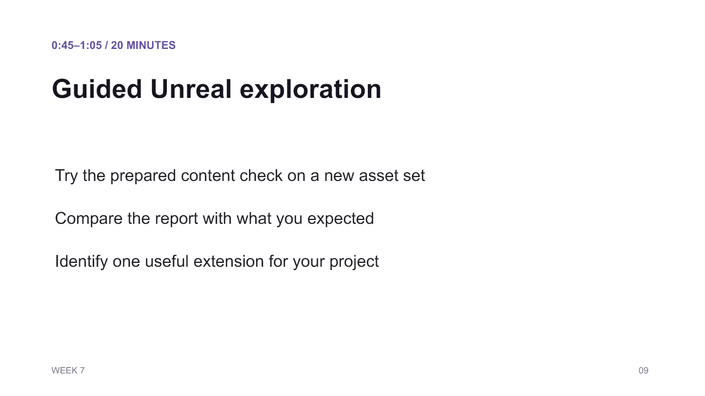
0:45–1:05 / 20 minutes
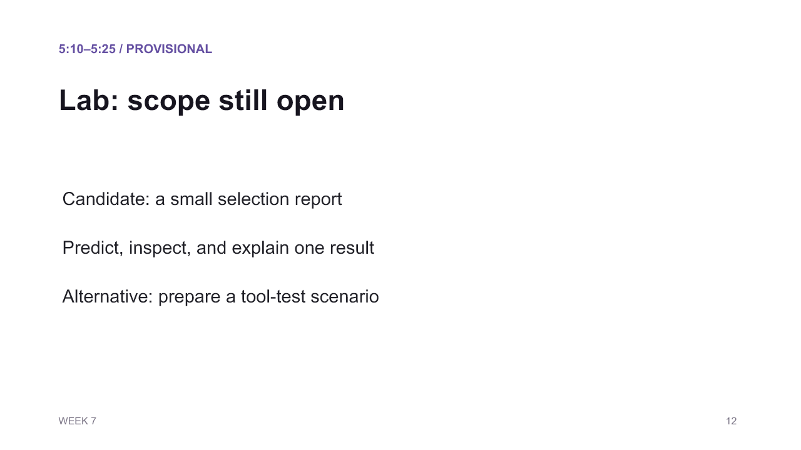
4:40–4:55 / provisional
Layout: Editable title and short text rows; slide 2 uses a native table. Existing images above show the actual slides. Additional software captures remain future preparation.
Teaching rationale: Replace 20-minute guided exploration with a 15-minute provisional lab. This ties the content to the requested block and avoids extending the confirmed session.
For this proposed exercise, choose a small selection and predict what a report should contain. Compare the output with your prediction. What would make this report clearer to another artist?
Lab remains a proposal, matching “Pending Ideas” in the agenda. Suggested 15-minute route: 2 briefing, 8 exploration, 3 pair explanation, 2 share-out. If setup is unreliable, use a prepared report walkthrough or tool-test preparation. The linked compilation contains three candidate routes.
Field-level edit: Merge the optional specialization preview into the last demo; remove the standalone slide.
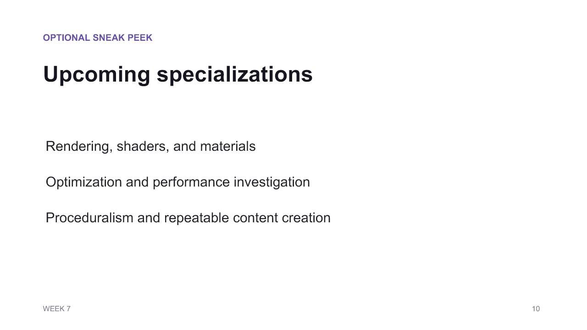
Optional sneak peek
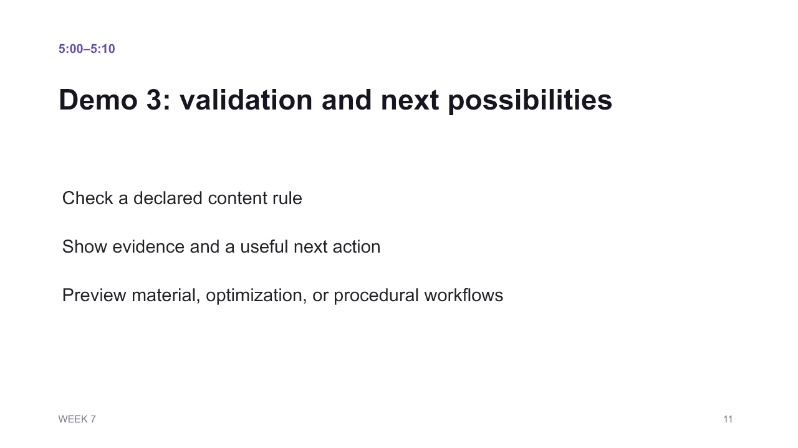
4:30–4:40
Layout: Editable title and short text rows; slide 2 uses a native table. Existing images above show the actual slides. Additional software captures remain future preparation.
Teaching rationale: Merge the optional specialization preview into the last demo; remove the standalone slide. This ties the content to the requested block and avoids extending the confirmed session.
A checker needs a requirement. A texture size or mesh count only becomes a problem in relation to that requirement. Which rule would help your project? What questions do you have about the examples?
Use A5 for the idea, but do not universalize square textures, powers of two, or polygon limits. Optionally show the existing museum audit, light-mobility script, or gallery capture output after preparation. Keep specialist topics to the final 2 minutes, with 2 minutes for questions.
Field-level edit: Keep the break slide; replace duration with 15 minutes and return time with 5:10.
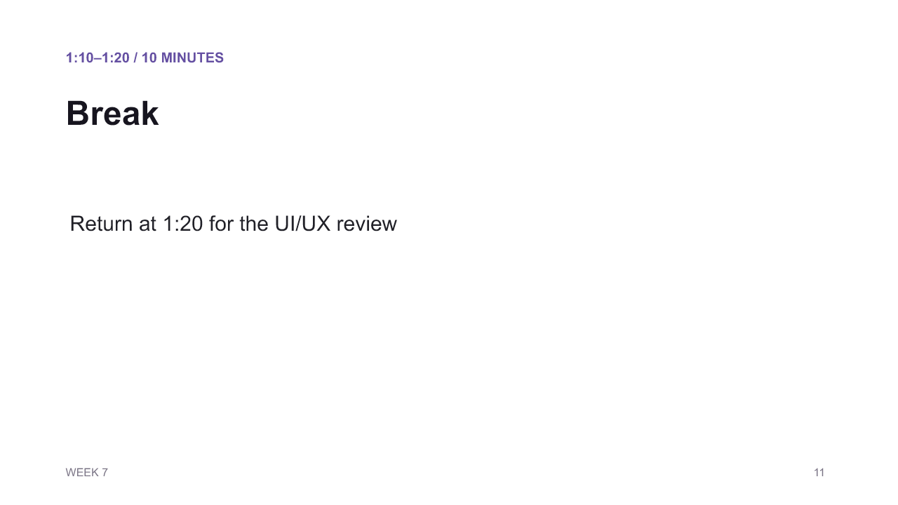
1:10–1:20 / 10 minutes
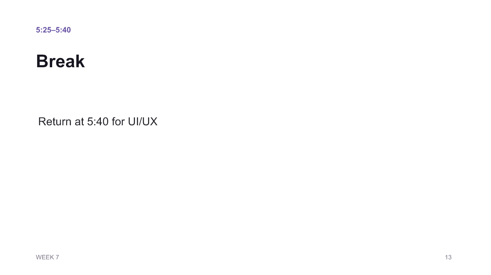
4:55–5:10
Layout: Editable title and short text rows; slide 2 uses a native table. Existing images above show the actual slides. Additional software captures remain future preparation.
Teaching rationale: Keep the break slide; replace duration with 15 minutes and return time with 5:10. This ties the content to the requested block and avoids extending the confirmed session.
We will return at 5:10 for a short UI/UX review, followed by peer testing.
15-minute break, retained from the proposed agenda.
Field-level edit: Keep UI/UX distinction; add the existing user/task framing.
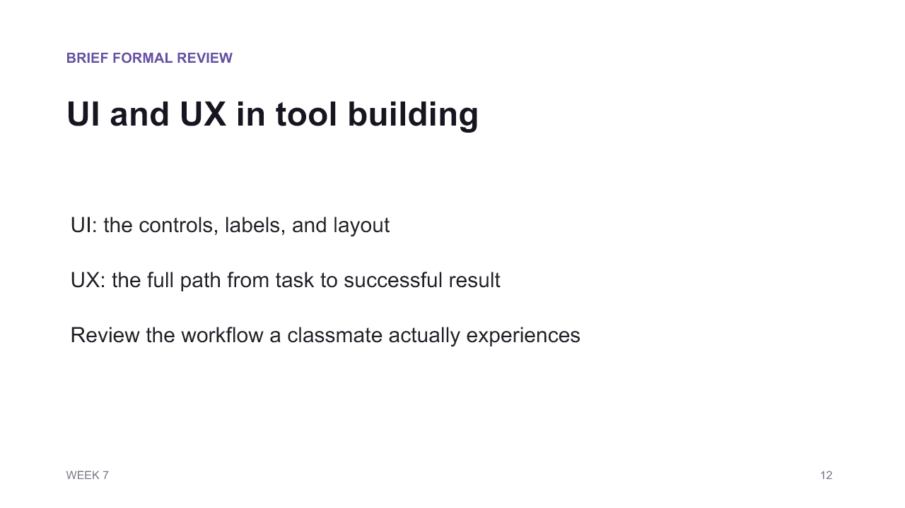
Brief formal review
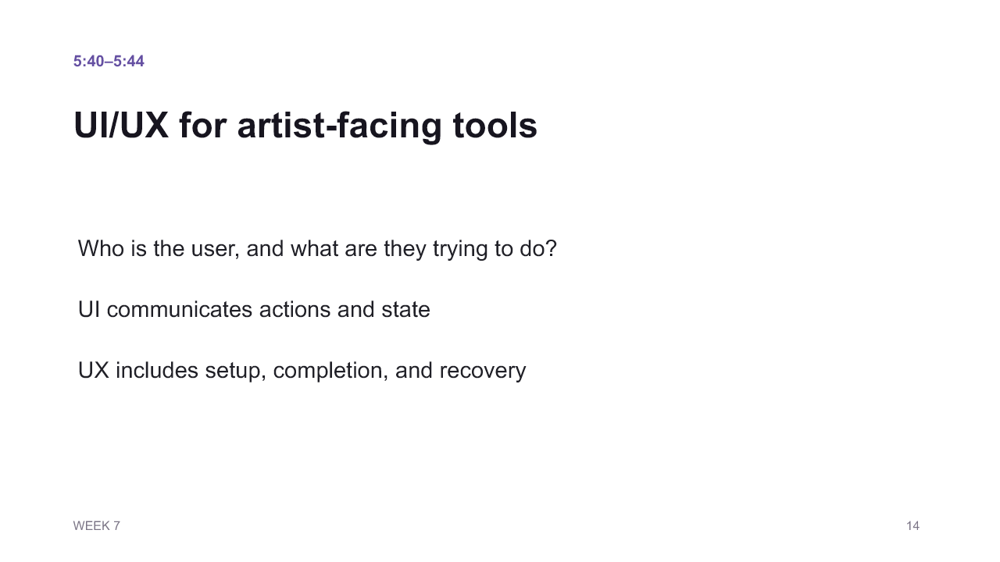
5:10–5:14
Layout: Editable title and short text rows; slide 2 uses a native table. Existing images above show the actual slides. Additional software captures remain future preparation.
Teaching rationale: Keep UI/UX distinction; add the existing user/task framing. This ties the content to the requested block and avoids extending the confirmed session.
Think of your tool as a task someone is trying to complete. Can they work out what to select, what the action changes, and how to recover? Which part currently requires you to explain it?
Use the FIEA lecture’s discovery and user-task framing. Condense its large UX process to one task and observable behavior. Keep business strategy, ROI, and stakeholder mapping as optional depth.
Field-level edit: Keep clarity, feedback and recovery; shorten the live review.
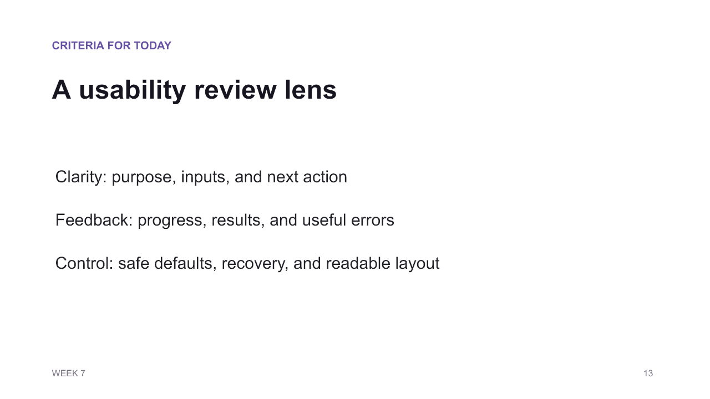
Criteria for today
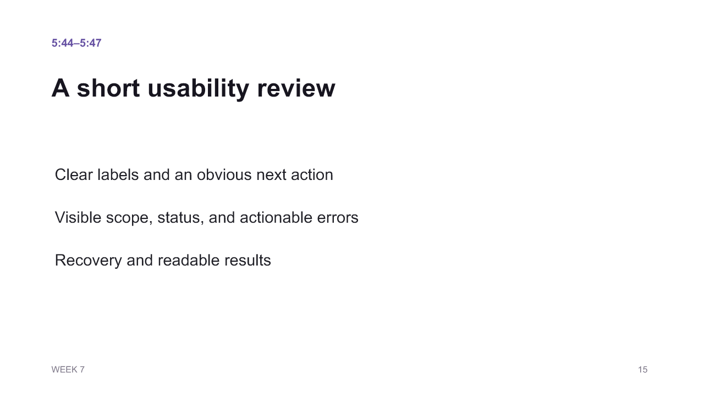
5:14–5:17
Layout: Editable title and short text rows; slide 2 uses a native table. Existing images above show the actual slides. Additional software captures remain future preparation.
Teaching rationale: Keep clarity, feedback and recovery; shorten the live review. This ties the content to the requested block and avoids extending the confirmed session.
A label should help the artist predict an action. Feedback should tell them what actually happened. Where might a classmate hesitate in your interface?
Connect Krug’s scanning and hierarchy to Norman’s signifiers, feedback, constraints, and recovery. Use the existing Week 3 Check / Apply example. The preparation review links the collected reading routes.
Field-level edit: Replace the extended critique with one concrete observation example and questions.
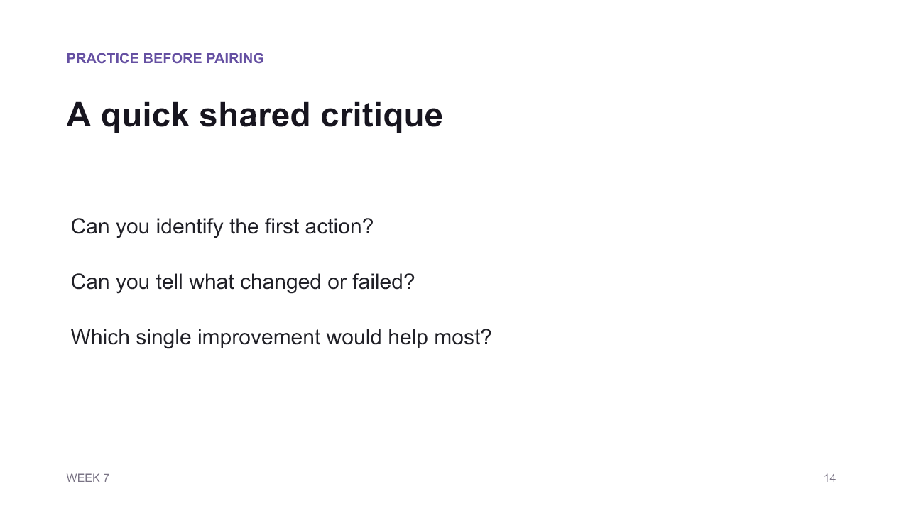
Practice before pairing
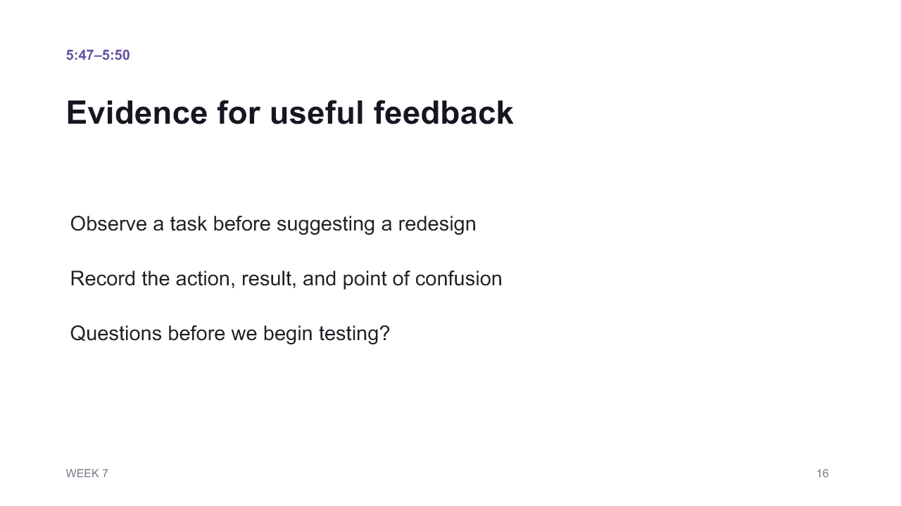
5:17–5:20
Layout: Editable title and short text rows; slide 2 uses a native table. Existing images above show the actual slides. Additional software captures remain future preparation.
Teaching rationale: Replace the extended critique with one concrete observation example and questions. This ties the content to the requested block and avoids extending the confirmed session.
Instead of saying “the UI is confusing,” tell the author what you tried and what you expected. For example, “I clicked Check with no selection and could not tell whether it ran.” What questions do you have about giving useful feedback?
Use one minute for a concrete example, one for observing versus preference, and one for student questions. The same criteria carry into peer and instructor feedback.
Field-level edit: Remove separate tool-preparation block; retain it as a lab alternative.
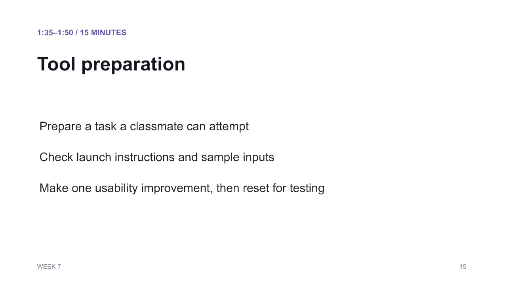
1:35–1:50 / 15 minutes
4:40–4:55 / provisional
Layout: Editable title and short text rows; slide 2 uses a native table. Existing images above show the actual slides. Additional software captures remain future preparation.
Teaching rationale: Remove separate tool-preparation block; retain it as a lab alternative. This ties the content to the requested block and avoids extending the confirmed session.
For this proposed exercise, choose a small selection and predict what a report should contain. Compare the output with your prediction. What would make this report clearer to another artist?
Lab remains a proposal, matching “Pending Ideas” in the agenda. Suggested 15-minute route: 2 briefing, 8 exploration, 3 pair explanation, 2 share-out. If setup is unreliable, use a prepared report walkthrough or tool-test preparation. The linked compilation contains three candidate routes.
Field-level edit: Keep three reviews; update launch time to 5:20.
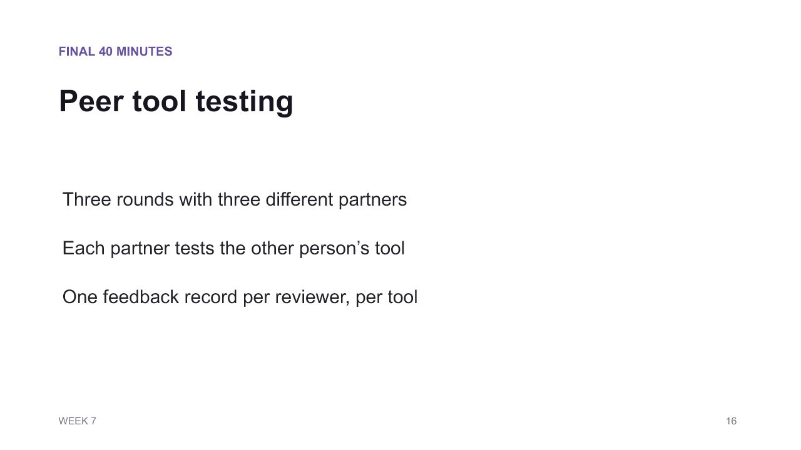
Final 40 minutes
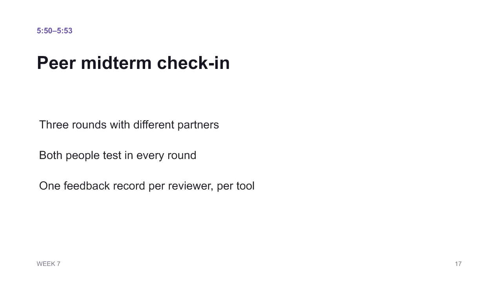
5:20–5:23
Layout: Editable title and short text rows; slide 2 uses a native table. Existing images above show the actual slides. Additional software captures remain future preparation.
Teaching rationale: Keep three reviews; update launch time to 5:20. This ties the content to the requested block and avoids extending the confirmed session.
Give your partner a task and let them operate your tool. Observe before explaining. Each of you will receive three records that can guide your next revision.
Three-minute setup covers this slide, round timing, and rotation. Supply three sheets per student or the equivalent digital form. The appendix is a form outline, not a published online form.
Field-level edit: Keep the exact ten-minute round split.
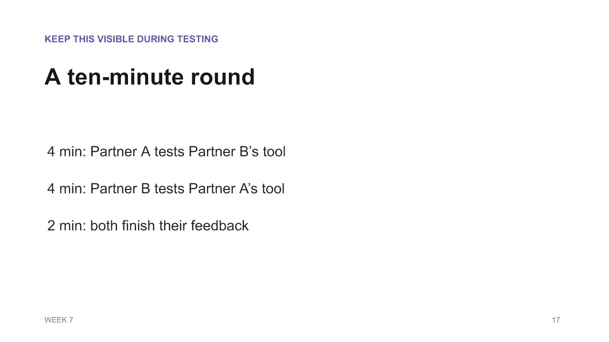
Keep this visible during testing
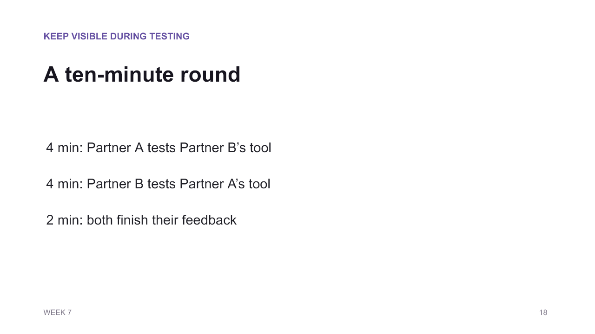
Keep visible during testing
Layout: Editable title and short text rows; slide 2 uses a native table. Existing images above show the actual slides. Additional software captures remain future preparation.
Teaching rationale: Keep the exact ten-minute round split. This ties the content to the requested block and avoids extending the confirmed session.
While testing, say what you expect to happen. While observing, note hesitation and the help your partner needs. Finish by recording one useful strength and one concrete improvement.
Each four-minute turn includes a short task handoff and quick notes. Use a prepared sample or duplicate data. Label a non-running tool review as walkthrough-only.
Field-level edit: Keep three rounds; replace relative timing with the clock times.
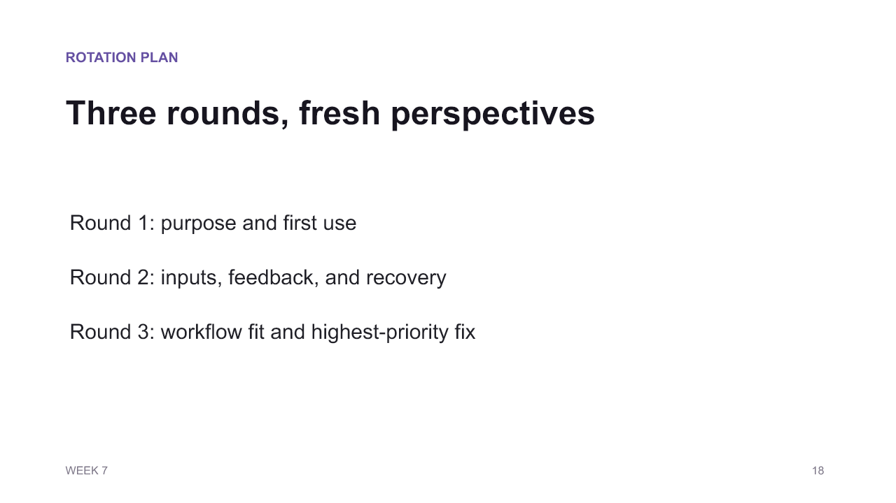
Rotation plan
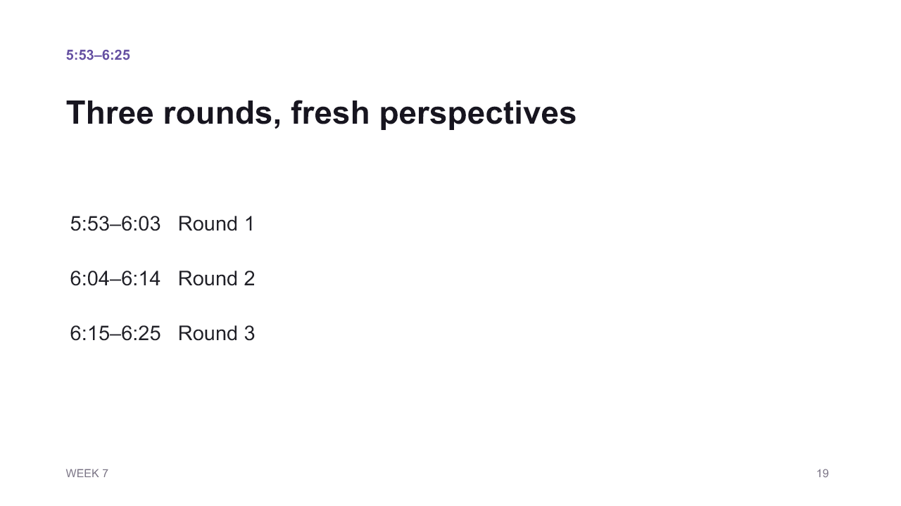
5:23–5:55
Layout: Editable title and short text rows; slide 2 uses a native table. Existing images above show the actual slides. Additional software captures remain future preparation.
Teaching rationale: Keep three rounds; replace relative timing with the clock times. This ties the content to the requested block and avoids extending the confirmed session.
Each round brings a new classmate to your tool. Use the same criteria so you can compare the observations afterward.
One-minute rotations at 5:33 and 5:44. For odd attendance, prepare a trio protocol or have the instructor join. Never promise three independent partners in a class too small to support that.
Field-level edit: Move evidence-based feedback before the activity; use it during the UI/UX close.
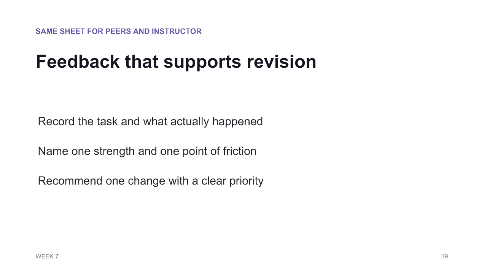
Same sheet for peers and instructor
5:17–5:20
Layout: Editable title and short text rows; slide 2 uses a native table. Existing images above show the actual slides. Additional software captures remain future preparation.
Teaching rationale: Move evidence-based feedback before the activity; use it during the UI/UX close. This ties the content to the requested block and avoids extending the confirmed session.
Instead of saying “the UI is confusing,” tell the author what you tried and what you expected. For example, “I clicked Check with no selection and could not tell whether it ran.” What questions do you have about giving useful feedback?
Use one minute for a concrete example, one for observing versus preference, and one for student questions. The same criteria carry into peer and instructor feedback.
Field-level edit: Keep revision reflection; update to 5:55–6:00.
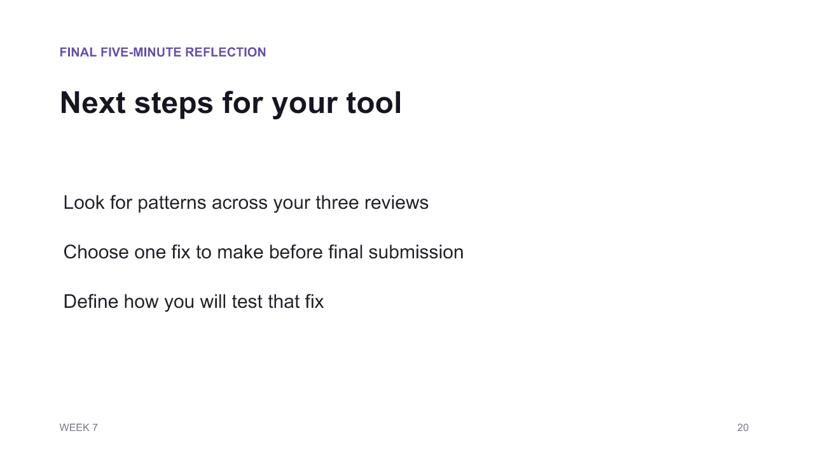
Final five-minute reflection
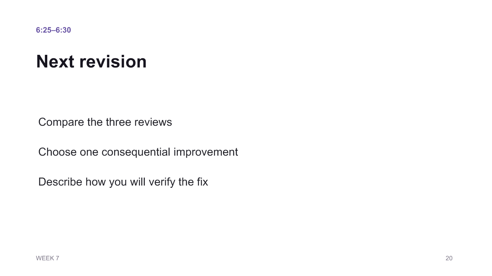
5:55–6:00
Layout: Editable title and short text rows; slide 2 uses a native table. Existing images above show the actual slides. Additional software captures remain future preparation.
Teaching rationale: Keep revision reflection; update to 5:55–6:00. This ties the content to the requested block and avoids extending the confirmed session.
Which issue appeared more than once? Choose a change you can test, then write what evidence would show that the revision helped.
Final five minutes. Retain existing assignment deadlines and requirements. Do not imply a new submission rule.
Field-level edit: Keep the feedback-sheet outline and its draft status.
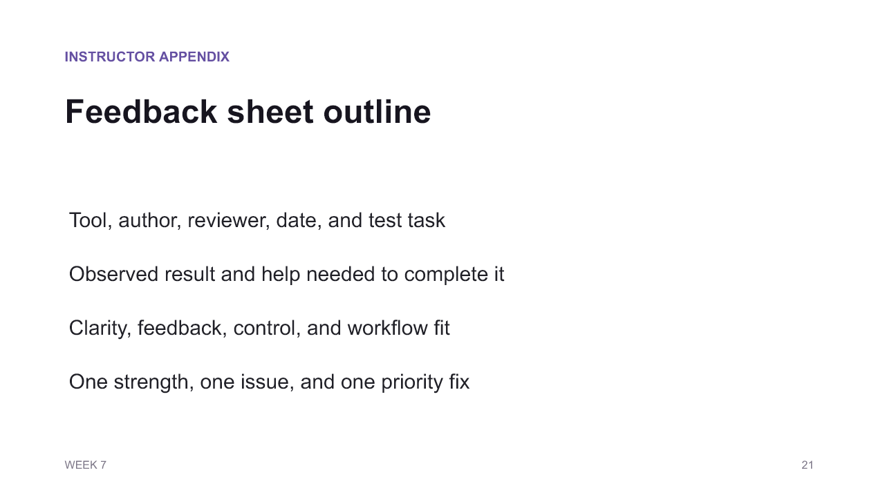
Instructor appendix
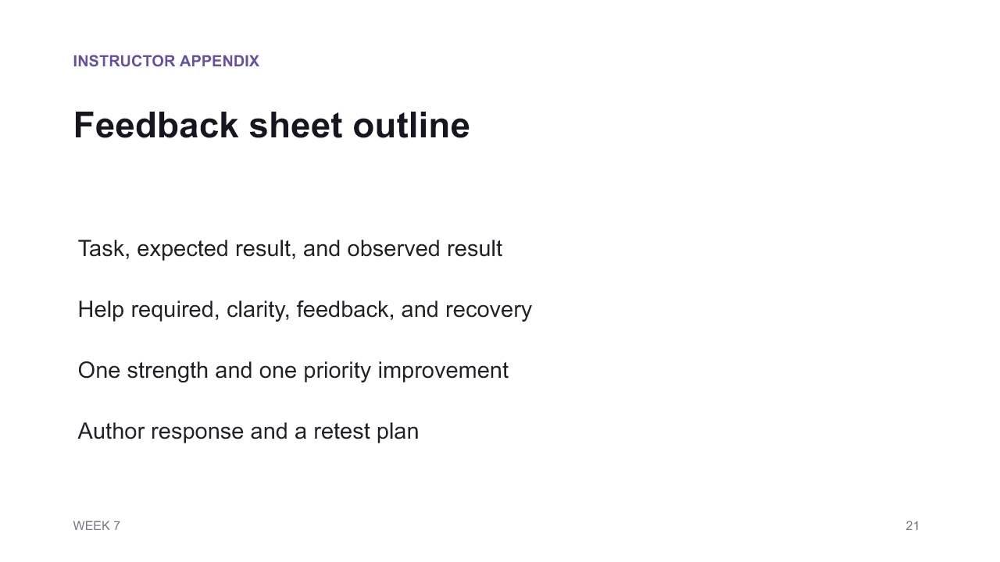
Instructor appendix
Layout: Editable title and short text rows; slide 2 uses a native table. Existing images above show the actual slides. Additional software captures remain future preparation.
Teaching rationale: Keep the feedback-sheet outline and its draft status. This ties the content to the requested block and avoids extending the confirmed session.
Instructor appendix; no classroom narration.
Suggested form: author, tool/version, reviewer, date/round, peer or instructor; test task; expected and actual result; independent / with help / blocked / walkthrough-only; evidence for clarity, feedback, control and workflow fit; strength; issue; priority; suggested change; author response and retest. Use identical fields on three printed sheets and the future online form. These are feedback criteria, not a new grading rubric.
Field-level edit: Replace general pacing notes with source-grounded preparation and optional-depth pointers.
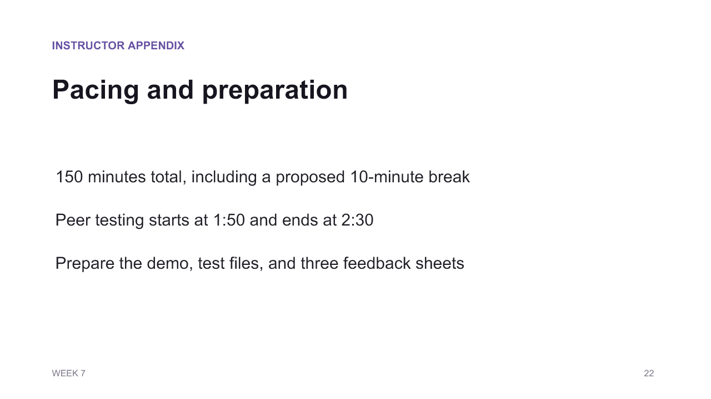
Instructor appendix
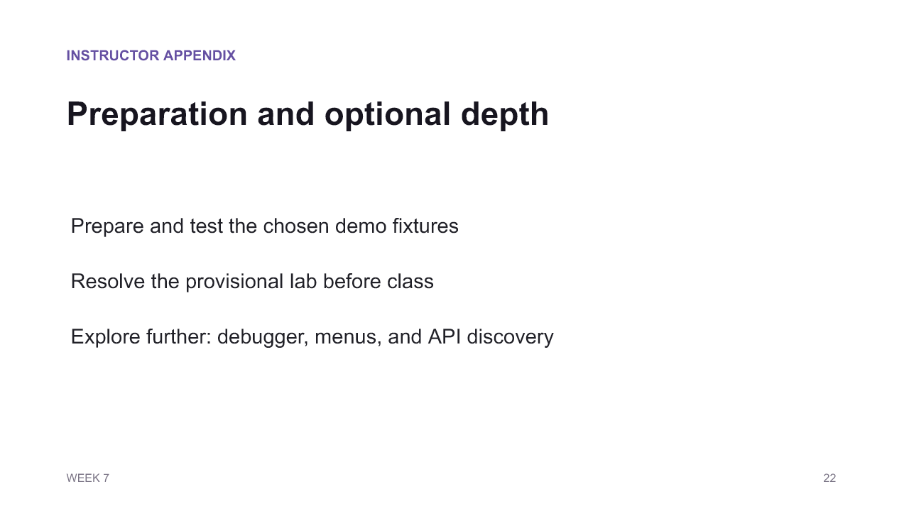
Instructor appendix
Layout: Editable title and short text rows; slide 2 uses a native table. Existing images above show the actual slides. Additional software captures remain future preparation.
Teaching rationale: Replace general pacing notes with source-grounded preparation and optional-depth pointers. This ties the content to the requested block and avoids extending the confirmed session.
Instructor appendix; no classroom narration.
The compilation has direct local-source links, script side effects, known snippet defects, and a slide-by-slide change map. Candidate extras: A2 debugger, A1 menu extension, Oster L8 help/dir/inheritance, L9 API/Blueprint relationship. Remote Control is a separate integration topic. No source script was executed or repaired during this quick scan.
Inspected: relevant Week 3/7 wiki text, validation and handoff guidance, the Week 3 reading synthesis, Unreal setup and selected tutorial notes in your OneDrive course library, FIEA UX notes, and the project scripts identified above. Longer notes and project builders were skimmed only where indicated. Collected video links were located, but videos were not watched. No external source credentials, course rules, or assessment dates were inferred. The only new web verification used Epic’s UE 5.7 Python documentation.
Revision history: the earlier 4:00–6:30 agenda remains in the original PowerPoint. On 11 October, the current agenda and preparation times moved to 3:30–6:00 PM. Old slide comparison images retain their historical times.